Chapter 6 Rerandomization and Regression Adjustment
Stratification and post-stratification in Chapter 5 are duals for discrete covariates in the design and analysis of randomized experiments. How should we deal with multidimensional, possibly continuous, covariates? We can discretize continuous covariates, but this is not an ideal strategy with many covariates. Rerandomization and regression adjustment are duals for general covariates, which are the topics for this chapter.
| design | analysis | |
|---|---|---|
| discrete covariate | stratification | post-stratification |
| general covariate | rerandomization | regression adjustment |
29 Rerandomization
29.1 Experimental design
Again we consider a finite population of  experimental units, where
experimental units, where  of them receive the treatment and
of them receive the treatment and  of them receive the control. Let
of them receive the control. Let
 be the treatment vector for these units. Unit
be the treatment vector for these units. Unit  has covariate
has covariate
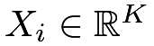
which can have continuous or binary components. Concatenate them as an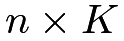
covariate matrix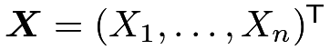
and center them at mean zero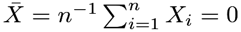
to simplify the presentation.The CRE balances the covariates in the treatment and control groups on average, for instance, the difference in means of the covariates
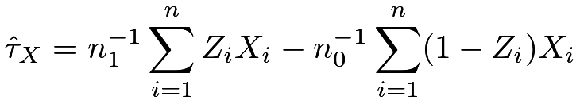 |
has mean zero under the CRE. However, it can result in undesired covariate balance across the treatment and control groups in the realized treatment allocation, that is, the realized value of
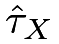
is often not zero. Using the vector form of Neyman, (1923) in Problem 4.6 before, we can show that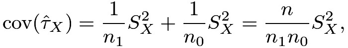 |
where
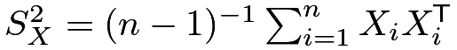
is the finite-population covariance matrix of the covariates. The following Mahalanobis distance measures the difference between the treatment and control groups: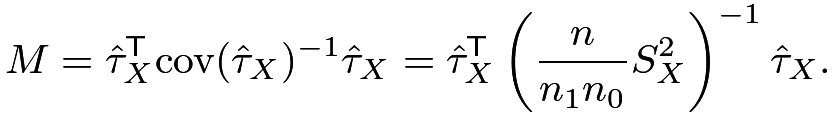 |
(26) |
Technically, the above formula for  in (26) is meaningful only if
in (26) is meaningful only if  is invertible, which means that the columns of the covariate matrix
is invertible, which means that the columns of the covariate matrix  are linearly independent. If a column can be represented by a linear combination of other columns, it is redundant and should be dropped before the experiment.
A nice feature of is that it is invariant under non-degenerate linear transformations of
are linearly independent. If a column can be represented by a linear combination of other columns, it is redundant and should be dropped before the experiment.
A nice feature of is that it is invariant under non-degenerate linear transformations of  . Lemma 6.1 below summarizes the result with the proof relegated to Problem 6.2.
. Lemma 6.1 below summarizes the result with the proof relegated to Problem 6.2.
Lemma 6.1
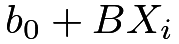 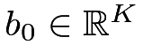 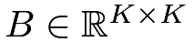 in (26) remains the same if we transform  to
to  where
where
The finite population CLT (Li and Ding,, 2017) ensures that with large , the Mahalanobis distance is approximately
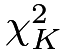
under the CRE. Therefore, it is likely that has a large realized value under the CRE with asymptotic mean  and variance
and variance 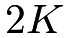
. Rerandomization avoids covariate imbalance by discarding the treatment allocations with large values of. Below I give a formal definition of the rerandomization using the Mahalanobis distance (ReM), which was proposed by Cox, (1982) and further studied by Morgan and Rubin, (2012).
Definition 6.1 (ReM)
Draw  from CRE and accept it if and only if
from CRE and accept it if and only if
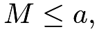 |
for some predetermined constant 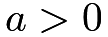
The problem of choosing
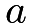
is similar to the problem of choosing the number of strata in the SRE, which is non-trivial in practice. At one extreme,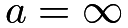
, we just conduct the CRE. At the other extreme,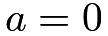
, there are very few feasible treatment allocations, and consequently, the experiment has little randomness, rendering randomization-based inference useless. As a compromise, we choose a small but not extremely small , for example,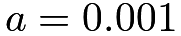
or some upper quantile of a distribution.ReM has many desirable properties. As mentioned above, it is invariant to linear transformations of the covariates. Moreover, it has nice geometric properties and elegant mathematical theory. This chapter will focus on ReM.
29.2 Statistical inference
An important question is how to analyze the data under ReM. Bruhn and McKenzie, (2009) and Morgan and Rubin, (2012) argued that we can always use the FRT as long as we simulate under the constraint
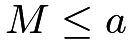
. This always yields finite-sample exact -values under the sharp null hypothesis. See Problem 6.1.
-values under the sharp null hypothesis. See Problem 6.1.
It is a challenging problem to derive the finite sample properties of ReM without assuming the sharp null hypothesis. Instead, Li et al., 2018b () derived the asymptotic distribution of the difference in means of the outcome  under ReM and the regularity conditions below.
under ReM and the regularity conditions below.
Condition 6.1
As  ,
,
- 1.
 and
and 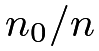
have positive limits; - 2.
the finite population covariance of
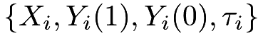
has a finite limit; - 3.
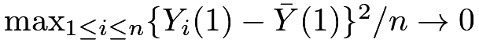
,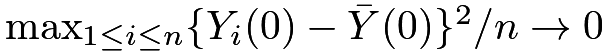
, and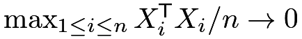
,
Below is the main theorem for ReM, which relies on additional notation. Let
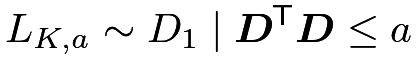 |
where
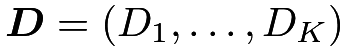
follows a-dimensional standard Normal distribution; let 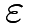
follow a univariate standard Normal distribution;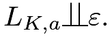
Theorem 6.1
Under ReM with and Condition 6.1, we have18
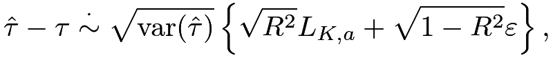 |
where
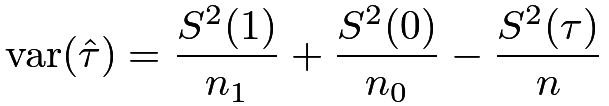 |
is Neyman, (1923)’s variance formula proved in Chapter 4, and
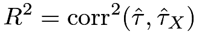 |
is the squared multiple correlation coefficient (see Section 30.A.1 for the definition) between and under the CRE.
Although the proof of Li et al., 2018b () is technical, the asymptotic distribution in Theorem 6.1 has a clear geometric interpretation, as shown in Figure 12. It shows that decomposes into a component that is a linear combination of and a component that is orthogonal to . Geometrically,
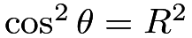
, where is the angle between and .
ReM affects the first component but does not change the second component. The truncated Normal distribution
is the angle between and .
ReM affects the first component but does not change the second component. The truncated Normal distribution 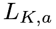
is due to the restriction of ReM on the first component.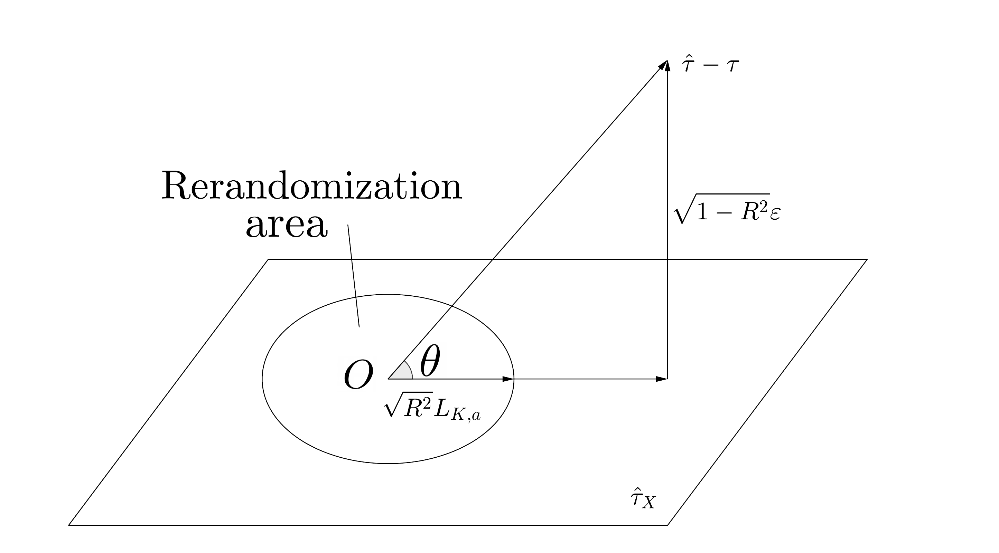
under ReMWhen , the asymptotic distribution simplifies to the one under the CRE:
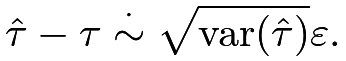 |
When the threshold is close to zero, the asymptotic distribution simplifies to
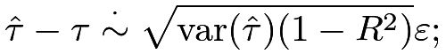 |
see Wang and Li, (2022) for a rigorous proof. So with a small threshold , the efficiency gain due to ReM depends on
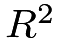
, which has the following equivalent form.Proposition 6.1
Under the CRE, we have
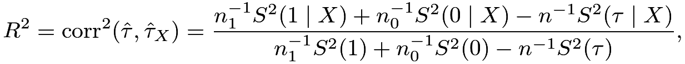 |
where 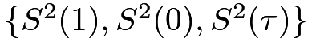 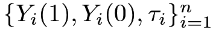 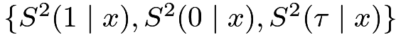 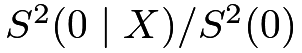 ; see Section 31.B for the definition of linear projections.
Under the constant causal effect assumption with
; see Section 31.B for the definition of linear projections.
Under the constant causal effect assumption with  , the reduces to
, the reduces to  and .
and .
When
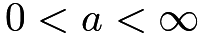
, the asymptotic distribution of has a more complicated form and is more concentrated at  and thus the difference in means is more precise under ReM than under the CRE.
and thus the difference in means is more precise under ReM than under the CRE.
If we ignore the design of ReM and still use the confidence interval based on Neyman, (1923)’s variance formula and the Normal approximation, it is overly conservative and overcovers even if the individual causal effects are constant. Li et al., 2018b () proposed to construct confidence intervals based on Theorem 6.1. We omit the discussion here but will come back to the inference issue in Section 31.
30 Regression adjustment
What if we do not conduct rerandomization in the design stage but want to adjust for covariate imbalance in the analysis stage of the CRE? We will discuss several regression adjustment strategies.
30.1 Covariate-adjusted FRT
The covariates are all fixed, and furthermore, under  , the observed outcomes are all fixed. Therefore, we can simulate the distribution of any test statistic
, the observed outcomes are all fixed. Therefore, we can simulate the distribution of any test statistic
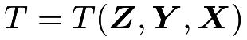
and calculate the-value. The basic idea of the FRT remains the same in the presence of additional covariates.
There are two general strategies to construct the test statistic. Problem 3.6 before hints at both of them. I summarize them below, using the terminology from Zhao and Ding, 2021a ().
Definition 6.2 (pseudo-outcome strategy for covariate-adjusted FRT)
We can construct the test statistic based on residuals from fitted statistical models. We can regress 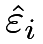 on to obtain residual
on to obtain residual
Definition 6.3 (model-output strategy for covariate-adjusted FRT)
We can use a regression coefficient as a test statistic. We can regress 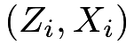 on  as the test statistic.
as the test statistic.
In the pseudo-outcome strategy in Definition 6.2, the regression of on should not include the treatment because we want to ensure that the pseudo outcome satisfies if the original outcome satisfies .
In the model-output strategy in Definition 6.3, the regression of on includes the treatment because we want to use the coefficient of to measure the deviation from .
Computationally, in strategy one, we only need to run regression once, whereas in strategy two, we need to run regression many times.
In the above, “regression” is a generic term, which can be linear regression, logistic regression, or even machine learning algorithms. The FRT with any test statistics from these two strategies will be finite-sample exact under although they differ under alternative hypotheses.
The rest of this section will review some test statistics based on OLS.
30.2 Analysis of covariance and extensions
Now we turn to direct estimation of the average causal effect that adjusts for the observed covariates.
Historically, Fisher, (1925) proposed to use the analysis of covariance (ANCOVA) to improve estimation efficiency. This remains a standard strategy in many fields. He suggested running the OLS of on
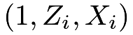
and obtaining the coefficient of as an estimator for . Let 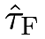
denote Fisher’s ANCOVA estimator.A former Berkeley Statistics Professor, David A. Freedman, reanalyzed Fisher’s ANCOVA under Neyman, (1923)’s potential outcomes framework. Freedman, 2008a (); Freedman, 2008b () found the following negative results:
-
[(1)]
- 1.
is biased, but the simple difference in means
is unbiased. - 2.
The asymptotic variance of may be even larger than that of
when . - 3.
The standard error from the OLS is inconsistent for the true standard error of under the CRE.
A former Berkeley Ph.D. student, Winston Lin, wrote a thesis in response to Freedman’s critiques. Lin, (2013) found the following positive results:
-
[(1)]
- 1.
The bias of is small in large samples, and it goes to zero as the sample size approaches infinity.
- 2.
We can improve the asymptotic efficiency of both
and by using the coefficient of in the OLS of on . Let  denote Lin, (2013)’s estimator. Moreover, the EHW standard error is a conservative estimator for the true standard error of under the CRE.
denote Lin, (2013)’s estimator. Moreover, the EHW standard error is a conservative estimator for the true standard error of under the CRE. - 3.
The EHW standard error19 for in the OLS fit of
on is a conservative estimator for the true standard error of under the CRE.
30.2.1 Some heuristics for Lin, (2013)’s results
Neyman, (1923)’s result demonstrates that the variance of the difference-in-means estimator depends on the variances of the potential outcomes. Intuitively, we can reduce the variance of the estimator by reducing the variances of the potential outcomes. A family of linearly adjusted estimators is
 |
 |
(27) | |||
|
(28) |
where are the sample means of the outcomes, and are the sample means of the covariates. This covariate-adjusted estimator tries to reduce the variance of by residualizing the potential outcomes. It reduces to with .
It has mean for any fixed values of and because We are interested in finding the that minimize the variance of . This estimator is essentially the difference in means of the adjusted potential outcomes . Applying Neyman, (1923)’s result, this estimator has variance
where and are the finite population variances of the adjusted potential outcomes and individual causal effects, respectively; moreover, a conservative variance estimate is
where
|
||||
|
are the sample variances of the adjusted potential outcomes with and being the sample means of under treatment and under control. To minimize , we need to solve two OLS problems20:
We run OLS of on for the treatment and control groups separately and obtain and . The final estimator is
|
||||
|
From the properties of the OLS fits (see (162)), we know
Therefore, we can rewrite the estimator as
| (29) |
The equivalent form in (29) suggests that we can obtain  from a single OLS fit below.
from a single OLS fit below.
Proposition 6.2
The estimator in (29) equals the coefficient of in the OLS fit of on , which is Lin, (2013)’s estimator introduced before.
Based on the discussion above, a conservative variance estimator for is
|
||||
Based on quite technical calculations, Lin, (2013) further showed that the EHW standard error from the OLS in Proposition 6.2 is almost identical to  which is a conservative estimator of the true standard error of under the CRE. Intuitively, this is because we do not assume that the linear model is correctly specified, and the EHW standard error is robust to model misspecification.
which is a conservative estimator of the true standard error of under the CRE. Intuitively, this is because we do not assume that the linear model is correctly specified, and the EHW standard error is robust to model misspecification.
There is a subtle issue with the discussion above. The variance formula works for fixed , but the estimator uses two estimated coefficients . The additional uncertainty in the estimated coefficients may cause finite-sample bias in the final estimator. Lin, (2013) showed that this issue goes away asymptotically because behaves similarly to , where and are the limit of and , respectively. Heuristically, the difference between and depends on
which is a product of two terms of small order. As a warning, the asymptotic theory requires a large sample size and some regularity conditions on the potential outcomes and covariates. In finite samples, regression adjustment can be even harmful due to the additional uncertainty in the estimated coefficients and .
30.2.2 Understanding Lin, (2013)’s estimator via predicting the potential outcomes
|
 |
 |
 |
||
|---|---|---|---|---|---|
 |
1 |  |
? | ||
| ⋮ | |||||
| 1 | ? | ||||
| 0 | ? | ||||
| ⋮ | |||||
 |
0 | ? |  |
We can view Lin, (2013)’s estimator as a predictive estimator based on OLS fits of the potential outcomes on the covariates. We build a prediction model for based on using the data from the treatment group:
| (30) |
Similarly, we build a prediction model for based on using the data from the control group:
| (31) |
Table 1 illustrates the prediction of the potential outcomes. If we predict the missing potential outcomes, then we have the following predictive estimator:
| (32) |
We can verify that with (30) and (31), the predictive estimator equals Lin, (2013)’s estimator:
| (33) |
If we predict all potential outcomes even if they are observed, we have the following projective estimator:
| (34) |
We can verify that with (30) and (31), the projective estimator equals Lin, (2013)’s estimator:
| (35) |
The terminology “predictive” and “projective” is from the survey sampling literature (Firth and Bennett,, 1998; Ding and Li,, 2018). The more general formulas (32) and (34) are well-defined with other predictors of the potential outcomes. To make connections with Lin, (2013)’s estimator, I focus on the linear predictors here. The predictors and can be quite general, including much more complicated machine learning algorithms. However, constructing a point estimator is just the first step in analyzing the CRE. A more important second step is to quantify the uncertainty associated with the estimator, which depends on the properties of the predictors of the potential outcomes. Nevertheless, without doing additional theoretical analysis, we can always use (32) and (34) as the test statistics in the FRT.
30.2.3 Understanding Lin, (2013)’s estimator via adjusting for covariate imbalance
The linearly adjusted estimator has an equivalent form
| (36) |
where , so we can also write it as Similarly, Lin, (2013)’s estimator has an equivalent form
| (37) |
where .
I leave the proofs of (36) and (37) to Problem 6.9. The forms (36) and (37) are the mathematical statements of “adjusting for the covariate imbalance.” They essentially subtract some linear combinations of the difference in means of the covariates. Since and are correlated under the CRE, the covariate adjustment with an appropriately chosen  reduces the variance of .
Another interesting feature of (36) and (37) is that the final estimators depend only on or , so the choice of the
reduces the variance of .
Another interesting feature of (36) and (37) is that the final estimators depend only on or , so the choice of the  -coefficients is not unique. Li and Ding, (2020) pointed out this simple fact. Therefore, Lin, (2013)’s estimator is just one of the optimal estimators. However, it can be easily implemented via the standard OLS with the EHW standard error. That’s why this book focuses on it.
-coefficients is not unique. Li and Ding, (2020) pointed out this simple fact. Therefore, Lin, (2013)’s estimator is just one of the optimal estimators. However, it can be easily implemented via the standard OLS with the EHW standard error. That’s why this book focuses on it.
30.3 Some additional remarks on regression adjustment
30.3.1 Duality between ReM and regression adjustment
Li et al., 2018b () pointed out that ReM and Lin, (2013)’s regression adjustment are duals in using covariates in the design and analysis stages of the experiment. To be more specific, when is small, the asymptotic distribution of under ReM is almost identical to the asymptotic distribution of under the CRE. So ReM uses covariates in the design stage and Lin, (2013)’s regression adjustment uses covariates in the analysis stage, achieving nearly the same asymptotic efficiency gain when is small.
30.3.2 Equivalence of regression adjustment and post-stratification
If we have discrete covariate with categories, we can create centered dummy variables
where equals the proportion of units with . In this case, Lin, (2013)’s regression adjustment is equivalent to post-stratification, as summarized by the following proposition.
Proposition 6.3
based in is numerically identical to the post-stratification estimator based on (see Chapter 26).
30.3.3 Difference-in-difference as a special case of covariate adjustment
An important covariate in many studies is the lagged outcome before the treatment. For instance, the covariate is the pre-test score if the outcome  is the post-test score in educational research; the covariate is the log wage before the job training program if the outcome is the log wage after the job training program. With the lagged outcome as a covariate, a popular estimator is the gain score or difference-in-difference estimator with in (27) and (28):
is the post-test score in educational research; the covariate is the log wage before the job training program if the outcome is the log wage after the job training program. With the lagged outcome as a covariate, a popular estimator is the gain score or difference-in-difference estimator with in (27) and (28):
 |
|
|||
|
The first form of justifies the name gain score because it is essentially the difference in means of the gain score .
The second form of justifies the name difference-in-difference because it is the difference between two differences in means.
This estimator is different from Lin, (2013)’s estimator: it fixes in advance while Lin, (2013)’s estimator involves two estimated ’s. The is unbiased
with a conservative variance estimator
 |
|
|||
where and are the sample means of the gain score under the treatment and control, respectively. When the lagged outcome is a strong predictor of the outcome, the gain score often has a much smaller variance than the outcome itself. In this case, often greatly reduces the variance of the simple difference in means of the outcome. See Problem 6.12 for more details.
In theory, Lin, (2013)’s estimator is always more efficient than with large samples. However, Lin, (2013)’s estimator is biased in finite samples, whereas is always unbiased.
30.4 Extension to the SRE
It is possible that we have an experiment stratified on a discrete variable and we also observe additional covariates . If all strata are large, then we can obtain
Lin, (2013)’s estimators within strata and obtain the final estimator as
A conservative variance estimator is
where is the EHW variance estimator from the OLS fit of the outcome on the intercept, the treatment indicator, the covariates, and their interactions within stratum Importantly, we need to center covariates by their stratum-specific means.
31 Unification, combination, and comparison
Li and Ding, (2020) unified the literature and showed that we can combine rerandomization and regression adjustment. That is, if we rerandomize in the design stage, we can use Lin, (2013)’s estimator with the EHW standard error in the analysis stage. The combination of rerandomization and regression adjustment improves covariate balance in the design stage and estimation efficiency in the analysis stage.
Table 2 summarizes the literature from Neyman, (1923) to Li and Ding, (2020). Arrow 1 illustrates the efficiency gain of covariate adjustment in the CRE: asymptotically, has a smaller variance than .
Arrow 2 illustrates the efficiency gain of ReM: asymptotically, has narrower quantile ranges under the ReM than under the CRE.
Arrows 3 and 4 illustrate the benefits of the combination of ReM and the CRE.
| analysis | ||||
|---|---|---|---|---|
| CRE | (Neyman,, 1923) |
(Lin,, 2013) | ||
| design | ||||
| ReM | (Li et al., 2018b, ) |
(Li and Ding,, 2020) |
32 Simulation
Angrist et al., (2009) conducted an experiment to evaluate different strategies to improve academic performance among college freshmen in a Canadian university. Here I use a subset of the original data, focusing on the control group and the treatment group offered academic support services and financial incentives for good grades. The outcome is the GPA at the end of the first year. I impute the missing outcomes with the observed average which is somewhat arbitrary (see Problem 6.14). Two covariates are the gender and baseline GPA.
The following code gives the results based on the unadjusted and adjusted estimators.
The adjusted estimator has a smaller standard error although it gives the same insignificant result as the unadjusted estimator.
I also use this dataset to conduct simulation studies to evaluate the four design and analysis strategies summarized in Table 2. I fit quadratic functions of the outcome on the covariates and use them to impute all the missing potential outcomes, separately for the treated and control groups. To show the improvement of ReM and regression adjustment, I also rescale the error terms by  and to increase the signal-to-noise ratio. With the imputed Science Table, I generate 2000 treatments, obtain the observed data, and calculate the estimators. In the simulation, the “true” outcome model is nonlinear, but we still use linear adjustment for estimation. By doing this, we can evaluate the properties of the estimators even when the linear model is misspecified.
and to increase the signal-to-noise ratio. With the imputed Science Table, I generate 2000 treatments, obtain the observed data, and calculate the estimators. In the simulation, the “true” outcome model is nonlinear, but we still use linear adjustment for estimation. By doing this, we can evaluate the properties of the estimators even when the linear model is misspecified.
Figure 13 shows the violin plots21 of the four combinations, subtracting the true from the estimates. As predicted by the theory, all estimators are nearly unbiased, and both ReM and regression adjustment improve efficiency. They are more effective when the noise level is smaller.
33 Final remarks
ReM uses the Mahalanobis distance as the balance criterion. We can consider general rerandomization with the balance criterion defined as a function of and . For example, we can use the following criterion based on marginal tests for all coordinates of . We accept if and only if
| (38) |
for some predetermined constant , where is the finite-population variance of covariate . For example, is some upper quantile of a standard Normal distribution. See Zhao and Ding, 2021b () for the theory for the rerandomization based on criterion (38) as well as other criteria.
With a continuous outcome, Fisher’s ANCOVA has been the standard approach for many years. Lin, (2013)’s improvement has better theoretical properties even when the linear model is misspecified. With a binary outcome, it is common to use the coefficient of the treatment in the logistic regression of the observed outcome on the intercept, the treatment indicator, and covariates to estimate the causal effects. However, Freedman, 2008c () showed that this logistic regression does not have nice properties under the potential outcomes framework. Even if the logistic model is correct, the coefficient estimates the conditional odds ratio (see Chapter 31.F) which may not be the parameter of interest; when the logistic model is incorrect, it is even harder to interpret the coefficient. From the discussion above, if the parameter of interest is the average causal effect, we can still use Lin, (2013)’s estimator to analyze the binary outcome data in the CRE. Guo and Basse, (2023) extend Lin, (2013)’s theory to allow for using generalized linear models to construct estimators for the average causal effect under the potential outcomes framework.
Other extensions of Lin, (2013)’s theory focus on high dimensional covariates. Bloniarz et al., (2016) focus on the regime with many covariates than the sample size, and suggest replacing the OLS fits with the least absolute shrinkage and selection operator (LASSO) fits (Tibshirani,, 1996) of the outcome on the intercept, the treatment, covariates and their interactions. Lei and Ding, (2021) focus on the regime with a diverging number of covariates without assuming sparsity, and under certain regularity conditions, they show that Lin, (2013)’s estimator is still consistent and asymptotically Normal. Wager et al., (2016) propose to use machine learning methods to analyze high dimensional experimental data.
34 Homework Problems
6.1 FRT under ReM
Describe the FRT under ReM.
6.2 Invariance of the Mahalanobis Distance
Prove Lemma 6.1.
6.3 Bias of the difference-in-means estimator under rerandomization
Assume that we draw from a CRE and accept it if and only if , where  is a predetermined balance criterion. Show that if and
is a predetermined balance criterion. Show that if and
| (39) |
then is unbiased for .
Verify that rerandomization using the Mahalanobis distance satisfies (39) if .
Give a counterexample that is biased for when these two conditions do not hold.
Remark: can be a general balance criterion in this problem. ReM is a special case with .
6.4 Equivalent form of in the CRE
Prove Proposition 6.1.
6.5 More on linear projections of the potential outcomes onto covariates
Show that
where is the finite population covariance between  ’s and ’s, , and is the finite population covariance matrix of ’s.
Find the analogous formulas for and
’s and ’s, , and is the finite population covariance matrix of ’s.
Find the analogous formulas for and
6.6 Comparing the true variances within the family of linearly adjusted estimator
Show that the variance decomposes into
where and are the coefficients of in the OLS projection of ’s and ’s onto ’s, respectively.
Remark: Li and Ding, (2017, Example 9) derived the decomposition. It shows that based on the true variance, is an optimal choice within the family of linearly adjusted estimator because is always non-negative.
6.7 Lin’s estimator for covariate adjustment
Prove Proposition 6.2.
6.8 Predictive and projective estimators
6.9 Equivalent form of the covariate-adjusted estimator
6.10 ANCOVA also adjusts for covariate imbalance
This problem gives a result for ANCOVA that is similar to (37).
Show that
where is the coefficient of in the OLS fit of on .
6.11 Regression adjustment / post-stratification of CRE
Prove Proposition 6.3.
Remark: Sometimes or may not be well-defined. In those cases, we treat and as equal. You can ignore this complexity in the proof.
6.12 More on the difference-in-difference estimator in the CRE
This problem gives more details for the difference-in-difference estimator in the CRE in Section 30.3.3.
Show that is unbiased for , calculate its variance, and show that is a conservative estimator for the true variance of . When does hold?
Compare the variances of  and to show that
and to show that
if and only if
where
are the coefficients of in the OLS fits of and on , respectively.
Remark: Gerber and Green, (2012, page 28) discussed a special case of this problem with
6.13 Data re-analyses of the Penn Bonus Experiment
Re-analyze the Penn Bonus Experiment data. The analysis in Chapter 5 uses the treatment indicator, the outcome, and the block indicator. Now we want to use all other covariates.
Conduct regression adjustments within the strata of the experiment, and then combine these adjusted estimators to estimate the average causal effect. Report the point estimator, estimated standard error, and 95% confidence interval. Compare them with those without regression adjustment.
6.14 Missing outcomes in randomized experiments
The data analysis in Section 32 uses a naive imputation method to deal with missing outcomes. It is somewhat arbitrary.
Impute the missing outcomes under the treatment and control, respectively, based on the observed means. Do the results change?
Impute the missing outcomes under the treatment and control, respectively, based on linear regressions of the observed outcomes on the covariates. Do the results change?
Do you have other ways to deal with missing outcomes? Justify them and implement them to analyze the dataset.
6.15 Recommended reading
The title of this chapter is the same as that of Li and Ding, (2020), which studied the roles of rerandomization and regression adjustment in the design and analysis stages of randomized experiments, respectively.
脚注
18. The notation “ ” means that
” means that  and
and  have the same asymptotic distributions.
have the same asymptotic distributions.
19. Without covariates, the HC2 correction yields identical variance estimator as Neyman, (1923)’s classic one; see Problem 4.3. For coherence, we can also use the HC2 correction for Lin, (2013)’s estimator with covariate adjustment. When the number of covariates is small compared with the sample size and the covariates do not contain outliers, the variants of the EHW standard error perform similarly to the original one. When the number of covariates is large compared with the sample size or the covariates contain outliers, the variants can outperform the original one. In those cases, Lei and Ding, (2021) recommend using the HC3 variant of the EHW standard error.
20. We can also minimize the true variance of . See Problem 6.6 for more details.
21. A violin plot is similar to a box plot, with the addition of a rotated kernel density plot on each side.